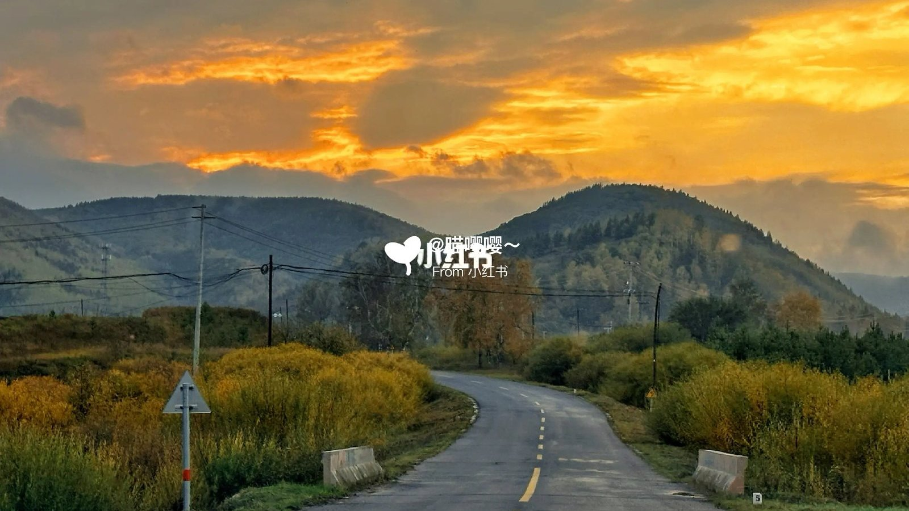
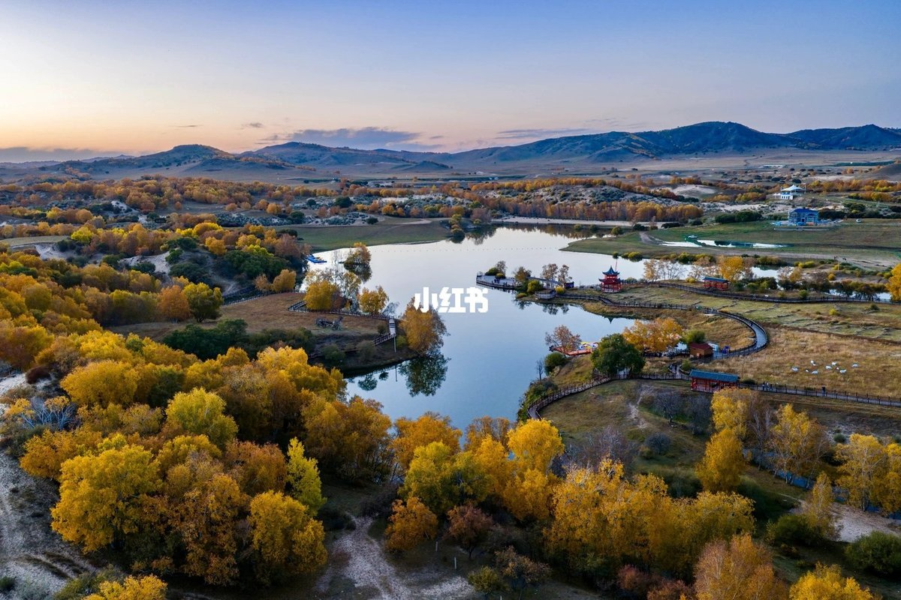
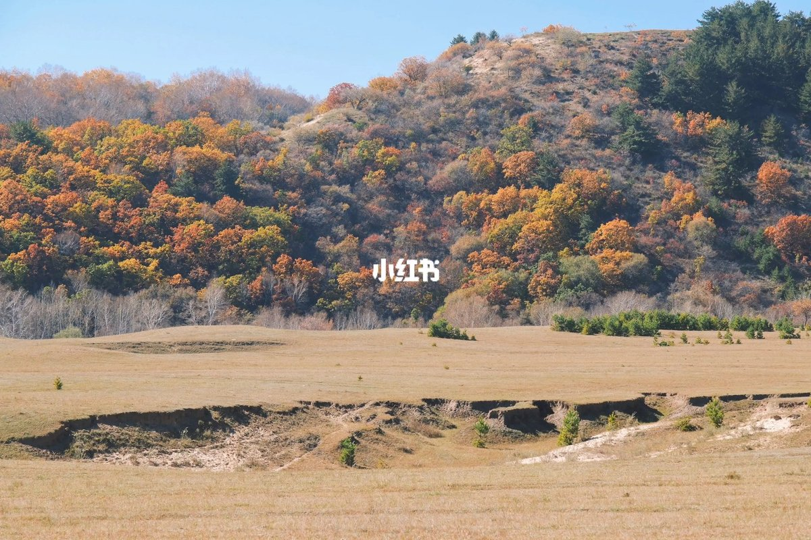
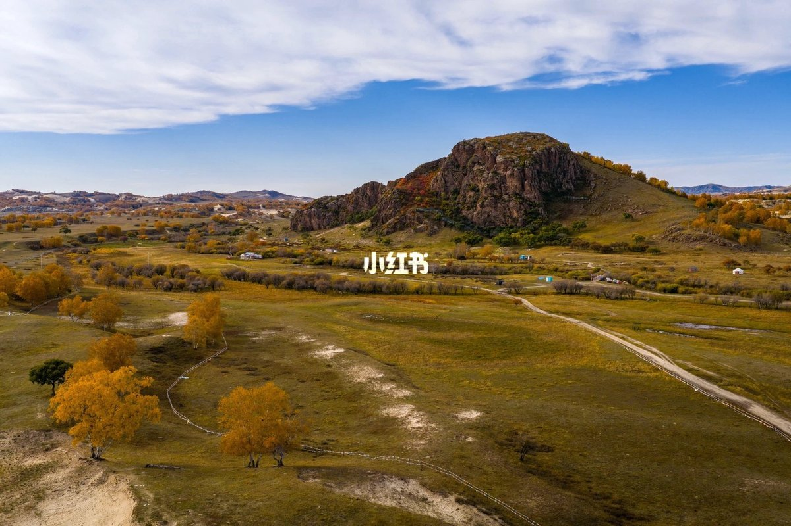
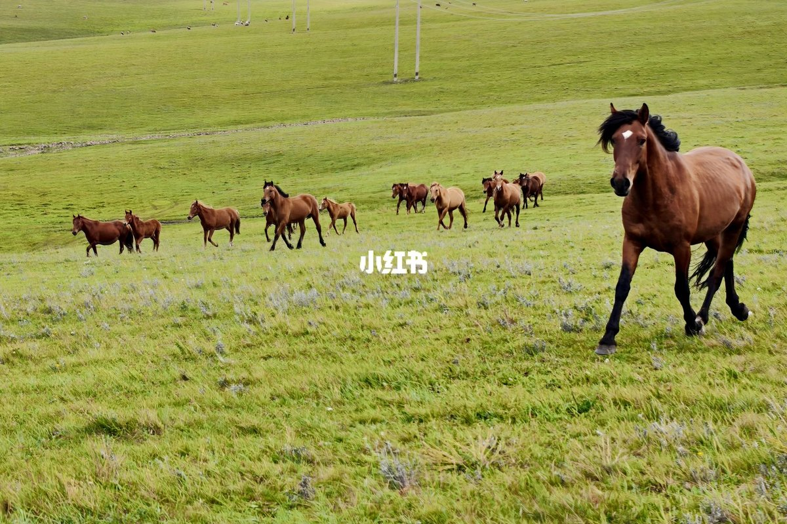
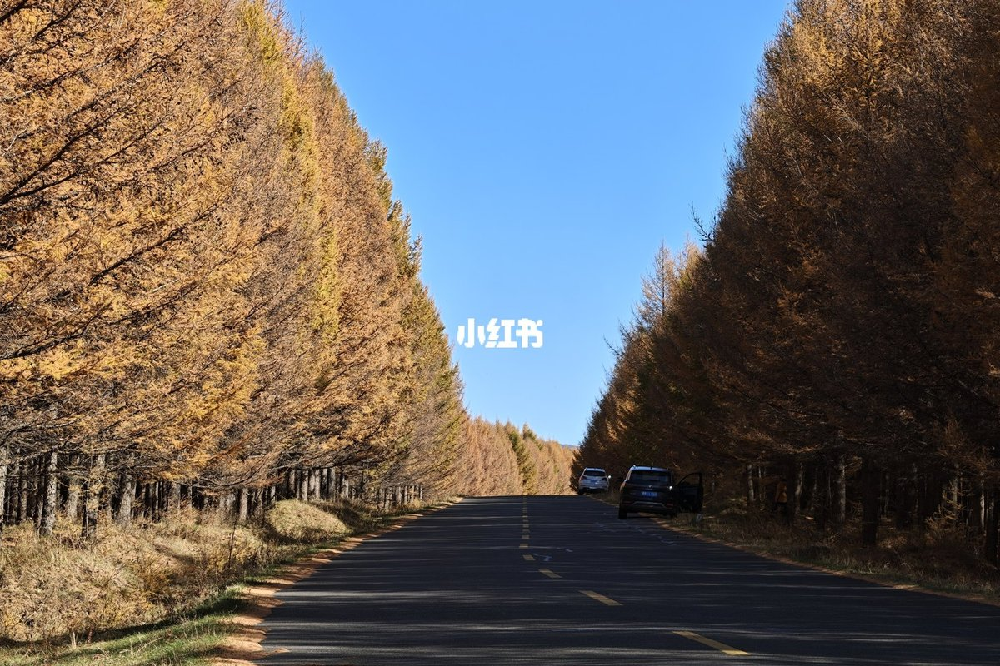
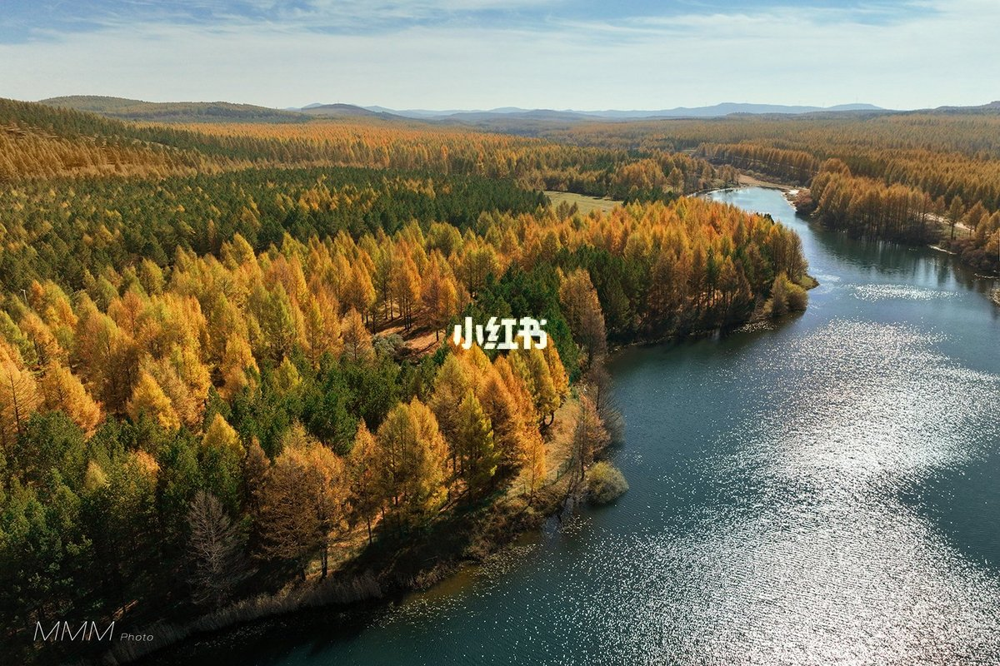
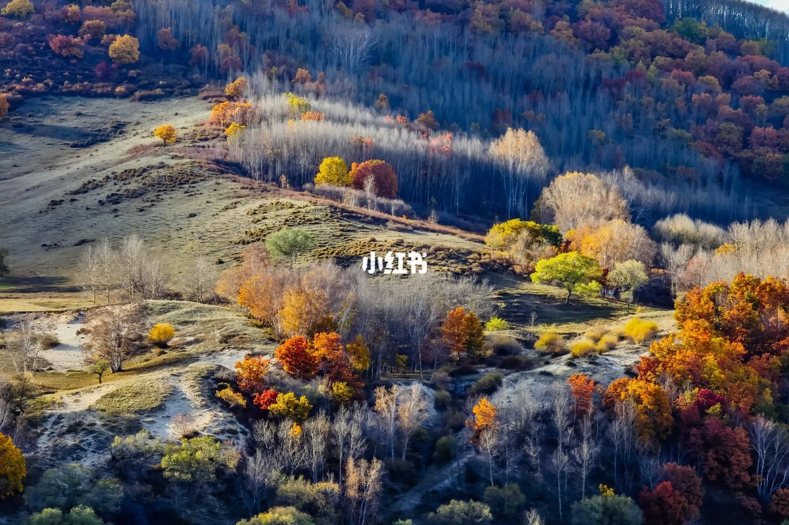
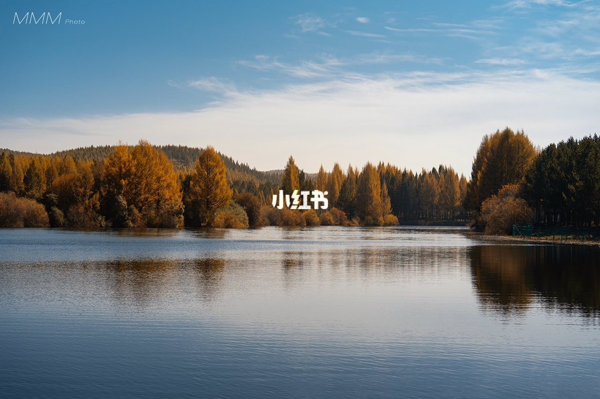
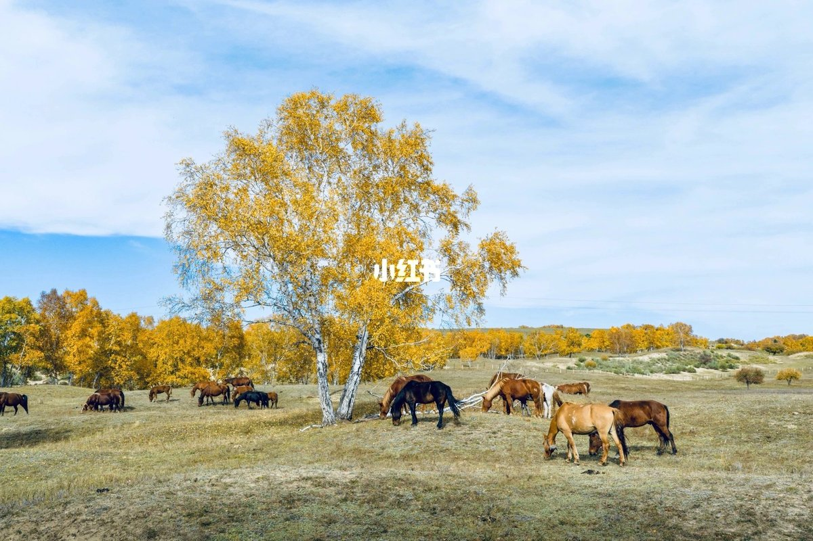

青岛出发 → 承德 → 塞罕坝 → 乌兰布统 → 克什克腾 → 回青岛 ｜ 一家三口 · 2026.09.26 — 10.05
| 天 | 日期 | 路线与安排 | 驾驶 | 住宿地 |
|---|---|---|---|---|
| D1 | 9.26 周六 中秋假期 | 青岛出发 → 经济南、天津、北京方向 → 承德。傍晚到，可去元宝街、武烈河边散步，吃一顿承德锅贴／驴肉火烧。 | 约 750 km 8 小时 | 承德市 |
| D2 | 9.27 周日 | 承德 → 上国家一号风景大道 → 御道口草原森林风景区（桃山湖、太阳湖）。傍晚进塞罕坝机械林场一带住宿。 | 约 280 km 4.5 小时 | 塞罕坝／御道口 |
| D3 | 9.28 周一 | 塞罕坝林海全天：七星湖湿地、泰丰湖、亮兵台、白桦林、滦河源头。防火期部分区域封闭，以现场开放区为准。 | 约 60 km | 塞罕坝／御道口 |
| D4 | 9.29 周二 | 跨过界河（滦河源头）进入内蒙古 → 乌兰布统：公主湖、盘龙峡谷，傍晚影视基地／北沟看日落。 | 约 60 km | 乌兰布统 |
| D5 | 9.30 周三 | 乌兰布统全天：蛤蟆坝（晨昏光影最好）、桦木沟、五彩山、将军泡子、野鸭湖。 | 约 120 km | 乌兰布统 |
| D6 | 10.1 周四 | 乌兰布统 → 克什克腾旗经棚镇：达里诺尔湖南岸（草原大海）、贡格尔草原。 | 约 200 km | 经棚／热水塘 |
| D7 | 10.2 周五 | 黄岗梁 + 热阿线：大兴安岭最高峰，落叶松与白桦的秋色核心带，自驾游公路本身即景点。 | 约 150 km | 经棚／热水塘 |
| D8 | 10.3 周六 | 经棚 → 赤峰 → 承德，返程第一段。晚上承德休整，可泡脚吃饭早点睡。 | 约 600 km 7 小时 | 承德市 |
| D9 | 10.4 周日 | 承德 → 北京外围 → 天津 → 德州 → 济南，返程第二段。 | 约 650 km 7 小时 | 济南／德州 |
| D10 | 10.5 周一 | 济南 → 潍坊 → 青岛，傍晚到家，行程收尾。 | 约 360 km 4 小时 | 到家 🏠 |






两山夹一沟的丘陵田园，沟谷里散着村落、木栅栏与牛羊，山顶白桦、山腰梯田、山麓老榆树。日落前 1 小时到，暖金光把树影人影拉长，是坝上公认最耐拍的机位。建议清晨或傍晚各去一次。

乌兰布统的秋色主角就是白桦：树干雪白、树冠金黄，成片立在起伏草坡上。桦木沟一带地形多变，草场、湿地、峡谷、丘陵交错，逆光下最通透。夹皮沟、小河头白桦林也可以顺路看。

公主湖藏在白桦林间，湖面平静，适合拍倒影；将军泡子水面开阔、芦苇成丛，晨雾时最有意境；五彩山因不同树种同期变色而得名，日落时色彩层次最丰富。

达里诺尔湖是草原上的“大海”，南岸可看候鸟；黄岗梁是大兴安岭最高峰，也是热阿线（热水—阿斯哈图）最惊艳的一段，落叶松金黄、山峦如彩色波浪，游客密度明显低于乌兰布统核心区。
| 日期 | 住宿地 | 建议 | 参考价 |
|---|---|---|---|
| 9.26 / 10.3 | 承德市 | 避暑山庄外围或武烈河畔商务酒店，晚上逛元宝街方便 | ¥350–500 |
| 9.27 / 9.28 | 塞罕坝·御道口 | 机械林场或御道口镇周边农家院／度假酒店，靠景区门口省时间 | ¥300–450 |
| 9.29 / 9.30 | 乌兰布统 | 红山军马场镇上的宾馆／蒙古包度假村，十一最紧俏，务必提前订 | ¥350–600 |
| 10.1 / 10.2 | 经棚／热水塘 | 经棚镇商务酒店，或热水塘温泉酒店（泡温泉解乏） | ¥300–500 |
| 10.4 | 济南／德州 | 市区连锁或商务酒店，靠高速口方便次日出发 | ¥250–350 |
门票参考：御道口景区通票 80 元／人（西环线含桃山湖、龟山、大峡谷、太阳湖 60 元；欧洲风情园 10 元；月亮湖 30 元，60 周岁以上凭身份证免票）；乌兰布统 120 元／人；蛤蟆坝约 30–40 元／人；达里诺尔湖南岸约 118 元／人；阿斯哈图石林约 160 元／人（以现场为准）；草原越野车穿越约 160 元／人。
全程估算约 ¥12,000、人均约 ¥4,100，构成：住宿（9 晚）≈3,300、餐饮 ≈3,000、油费 ≈2,060、过路费 ≈1,400、门票（3 人）≈1,480、越野车／停车／温泉等 ≈1,000。
穿衣：坝上 10 月初白天 8–15℃、夜间可到 0℃ 甚至更低，风大。给爸妈备羽绒服或厚冲锋衣、保暖内衣、帽子手套围巾；看日出晨雾时全套上。
随车：备胎与换胎工具、充气泵、防冻玻璃水、矿泉水与干粮、颈枕腰枕、厚毯子、充电线、离线地图。
证件：身份证随身（过检查站、买门票都用得上），老年证／身份证能免票，一定带上。
防火与限速：秋季是森林草原防火期，部分林区、栈道会封闭，进景区主动上交火种；坝上部分路段有区间限速与野生动物出没，别贪快。
加油：城镇见加油站加满，草原深处站点稀。
吃：烤全羊／手把肉、铜锅涮肉、莜面、蒙古奶茶，承德一侧还有锅贴与驴肉火烧。